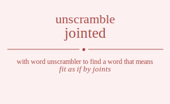

The word found after unscrambling jointed means that fit as if by joints, provide with a joint, fasten with a joint, separate (meat) at the joint, having joints or jointed segments; , .

The word found after unscrambling jointed means that fit as if by joints, provide with a joint, fasten with a joint, separate (meat) at the joint, having joints or jointed segments; , .
You can also find solutions for different combinations of letters in jointed like jointed jointde joinetd joinedt joindte joindet joitned joitnde joitend joitedn joitdne joitden joientd joiendt joietnd joietdn joiednt joiedtn joidnte joidnet joidtne joidten joident joidetn jonited jonitde jonietd joniedt jonidte jonidet jontied jontide jonteid jontedi jontdie jontdei joneitd joneidt jonetid jonetdi jonedit jonedti jondite jondiet jondtie jondtei jondeit jondeti jotined jotinde jotiend jotiedn jotidne jotiden jotnied jotnide jotneid jotnedi jotndie jotndei joteind joteidn jotenid jotendi jotedin jotedni jotdine jotdien jotdnie jotdnei jotdein jotdeni joeintd joeindt joeitnd joeitdn joeidnt joeidtn joenitd joenidt joentid joentdi joendit joendti joetind joetidn joetnid joetndi joetdin joetdni joedint joeditn joednit joednti joedtin joedtni jodinte jodinet joditne joditen jodient jodietn jodnite jodniet jodntie jodntei jodneit jodneti jodtine jodtien jodtnie jodtnei jodtein jodteni jodeint jodeitn jodenit jodenti jodetin jodetni jionted jiontde jionetd jionedt jiondte jiondet jiotned jiotnde jiotend jiotedn jiotdne jiotden jioentd jioendt jioetnd jioetdn jioednt jioedtn jiodnte jiodnet jiodtne jiodten jiodent jiodetn jinoted jinotde jinoetd jinoedt jinodte jinodet jintoed jintode jinteod jintedo jintdoe jintdeo jineotd jineodt jinetod jinetdo jinedot jinedto jindote jindoet jindtoe jindteo jindeot jindeto jitoned jitonde jitoend jitoedn jitodne jitoden jitnoed jitnode jitneod jitnedo jitndoe jitndeo jiteond jiteodn jitenod jitendo jitedon jitedno jitdone jitdoen jitdnoe jitdneo jitdeon jitdeno jieontd jieondt jieotnd jieotdn jieodnt jieodtn jienotd jienodt jientod jientdo jiendot jiendto jietond jietodn jietnod jietndo jietdon jietdno jiedont jiedotn jiednot jiednto jiedton jiedtno jidonte jidonet jidotne jidoten jidoent jidoetn jidnote jidnoet jidntoe jidnteo jidneot jidneto jidtone jidtoen jidtnoe jidtneo jidteon jidteno jideont jideotn jidenot jidento jideton jidetno jnoited jnoitde jnoietd jnoiedt jnoidte jnoidet jnotied jnotide jnoteid jnotedi jnotdie jnotdei jnoeitd jnoeidt jnoetid jnoetdi jnoedit jnoedti jnodite jnodiet jnodtie jnodtei jnodeit jnodeti jnioted jniotde jnioetd jnioedt jniodte jniodet jnitoed jnitode jniteod jnitedo jnitdoe jnitdeo jnieotd jnieodt jnietod jnietdo jniedot jniedto jnidote jnidoet jnidtoe jnidteo jnideot jnideto jntoied jntoide jntoeid jntoedi jntodie jntodei jntioed jntiode jntieod jntiedo jntidoe jntideo jnteoid jnteodi jnteiod jnteido jntedoi jntedio jntdoie jntdoei jntdioe jntdieo jntdeoi jntdeio jneoitd jneoidt jneotid jneotdi jneodit jneodti jneiotd jneiodt jneitod jneitdo jneidot jneidto jnetoid jnetodi jnetiod jnetido jnetdoi jnetdio jnedoit jnedoti jnediot jnedito jnedtoi jnedtio jndoite jndoiet jndotie jndotei jndoeit jndoeti jndiote jndioet jnditoe jnditeo jndieot jndieto jndtoie jndtoei jndtioe jndtieo jndteoi jndteio jndeoit jndeoti jndeiot jndeito jndetoi jndetio jtoined jtoinde jtoiend jtoiedn jtoidne jtoiden jtonied jtonide jtoneid jtonedi jtondie jtondei jtoeind jtoeidn jtoenid jtoendi jtoedin jtoedni jtodine jtodien jtodnie jtodnei jtodein jtodeni jtioned jtionde jtioend jtioedn jtiodne jtioden jtinoed jtinode jtineod jtinedo jtindoe jtindeo jtieond jtieodn jtienod jtiendo jtiedon jtiedno jtidone jtidoen jtidnoe jtidneo jtideon jtideno jtnoied jtnoide jtnoeid jtnoedi jtnodie jtnodei jtnioed jtniode jtnieod jtniedo jtnidoe jtnideo jtneoid jtneodi jtneiod jtneido jtnedoi jtnedio jtndoie jtndoei jtndioe jtndieo jtndeoi jtndeio jteoind jteoidn jteonid jteondi jteodin jteodni jteiond jteiodn jteinod jteindo jteidon jteidno jtenoid jtenodi jteniod jtenido jtendoi jtendio jtedoin jtedoni jtedion jtedino jtednoi jtednio jtdoine jtdoien jtdonie jtdonei jtdoein jtdoeni jtdione jtdioen jtdinoe jtdineo jtdieon jtdieno jtdnoie jtdnoei jtdnioe jtdnieo jtdneoi jtdneio jtdeoin jtdeoni jtdeion jtdeino jtdenoi jtdenio jeointd jeoindt jeoitnd jeoitdn jeoidnt jeoidtn jeonitd jeonidt jeontid jeontdi jeondit jeondti jeotind jeotidn jeotnid jeotndi jeotdin jeotdni jeodint jeoditn jeodnit jeodnti jeodtin jeodtni jeiontd jeiondt jeiotnd jeiotdn jeiodnt jeiodtn jeinotd jeinodt jeintod jeintdo jeindot jeindto jeitond jeitodn jeitnod jeitndo jeitdon jeitdno jeidont jeidotn jeidnot jeidnto jeidton jeidtno jenoitd jenoidt jenotid jenotdi jenodit jenodti jeniotd jeniodt jenitod jenitdo jenidot jenidto jentoid jentodi jentiod jentido jentdoi jentdio jendoit jendoti jendiot jendito jendtoi jendtio jetoind jetoidn jetonid jetondi jetodin jetodni jetiond jetiodn jetinod jetindo jetidon jetidno jetnoid jetnodi jetniod jetnido jetndoi jetndio jetdoin jetdoni jetdion jetdino jetdnoi jetdnio jedoint jedoitn jedonit jedonti jedotin jedotni jediont jediotn jedinot jedinto jediton jeditno jednoit jednoti jedniot jednito jedntoi jedntio jedtoin jedtoni jedtion jedtino jedtnoi jedtnio jdointe jdoinet jdoitne jdoiten jdoient jdoietn jdonite jdoniet jdontie jdontei jdoneit jdoneti jdotine jdotien jdotnie jdotnei jdotein jdoteni jdoeint jdoeitn jdoenit jdoenti jdoetin jdoetni jdionte jdionet jdiotne jdioten jdioent jdioetn jdinote jdinoet jdintoe jdinteo jdineot jdineto jditone jditoen jditnoe jditneo jditeon jditeno jdieont jdieotn jdienot jdiento jdieton jdietno jdnoite jdnoiet jdnotie jdnotei jdnoeit jdnoeti jdniote jdnioet jdnitoe jdniteo jdnieot jdnieto jdntoie jdntoei jdntioe jdntieo jdnteoi jdnteio jdneoit jdneoti jdneiot jdneito jdnetoi jdnetio jdtoine jdtoien jdtonie jdtonei jdtoein jdtoeni jdtione jdtioen jdtinoe jdtineo jdtieon jdtieno jdtnoie jdtnoei jdtnioe jdtnieo jdtneoi jdtneio jdteoin jdteoni jdteion jdteino jdtenoi jdtenio jdeoint jdeoitn jdeonit jdeonti jdeotin jdeotni jdeiont jdeiotn jdeinot jdeinto jdeiton jdeitno jdenoit jdenoti jdeniot jdenito jdentoi jdentio jdetoin jdetoni jdetion jdetino jdetnoi jdetnio ojinted ojintde ojinetd ojinedt ojindte ojindet ojitned ojitnde ojitend ojitedn ojitdne ojitden ojientd ojiendt ojietnd ojietdn ojiednt ojiedtn ojidnte ojidnet ojidtne ojidten ojident ojidetn ojnited ojnitde ojnietd ojniedt ojnidte ojnidet ojntied ojntide ojnteid ojntedi ojntdie ojntdei ojneitd ojneidt ojnetid ojnetdi ojnedit ojnedti ojndite ojndiet ojndtie ojndtei ojndeit ojndeti ojtined ojtinde ojtiend ojtiedn ojtidne ojtiden ojtnied ojtnide ojtneid ojtnedi ojtndie ojtndei ojteind ojteidn ojtenid ojtendi ojtedin ojtedni ojtdine ojtdien ojtdnie ojtdnei ojtdein ojtdeni ojeintd ojeindt ojeitnd ojeitdn ojeidnt ojeidtn ojenitd ojenidt ojentid ojentdi ojendit ojendti ojetind ojetidn ojetnid ojetndi ojetdin ojetdni ojedint ojeditn ojednit ojednti ojedtin ojedtni ojdinte ojdinet ojditne ojditen ojdient ojdietn ojdnite ojdniet ojdntie ojdntei ojdneit ojdneti ojdtine ojdtien ojdtnie ojdtnei ojdtein ojdteni ojdeint ojdeitn ojdenit ojdenti ojdetin ojdetni oijnted oijntde oijnetd oijnedt oijndte oijndet oijtned oijtnde oijtend oijtedn oijtdne oijtden oijentd oijendt oijetnd oijetdn oijednt oijedtn oijdnte oijdnet oijdtne oijdten oijdent oijdetn oinjted oinjtde oinjetd oinjedt oinjdte oinjdet ointjed ointjde ointejd ointedj ointdje ointdej oinejtd oinejdt oinetjd oinetdj oinedjt oinedtj oindjte oindjet oindtje oindtej oindejt oindetj oitjned oitjnde oitjend oitjedn oitjdne oitjden oitnjed oitnjde oitnejd oitnedj oitndje oitndej oitejnd oitejdn oitenjd oitendj oitedjn oitednj oitdjne oitdjen oitdnje oitdnej oitdejn oitdenj oiejntd oiejndt oiejtnd oiejtdn oiejdnt oiejdtn oienjtd oienjdt oientjd oientdj oiendjt oiendtj oietjnd oietjdn oietnjd oietndj oietdjn oietdnj oiedjnt oiedjtn oiednjt oiedntj oiedtjn oiedtnj oidjnte oidjnet oidjtne oidjten oidjent oidjetn oidnjte oidnjet oidntje oidntej oidnejt oidnetj oidtjne oidtjen oidtnje oidtnej oidtejn oidtenj oidejnt oidejtn oidenjt oidentj oidetjn oidetnj onjited onjitde onjietd onjiedt onjidte onjidet onjtied onjtide onjteid onjtedi onjtdie onjtdei onjeitd onjeidt onjetid onjetdi onjedit onjedti onjdite onjdiet onjdtie onjdtei onjdeit onjdeti onijted onijtde onijetd onijedt onijdte onijdet onitjed onitjde onitejd onitedj onitdje onitdej oniejtd oniejdt onietjd onietdj oniedjt oniedtj onidjte onidjet onidtje onidtej onidejt onidetj ontjied ontjide ontjeid ontjedi ontjdie ontjdei ontijed ontijde ontiejd ontiedj ontidje ontidej ontejid ontejdi onteijd onteidj ontedji ontedij ontdjie ontdjei ontdije ontdiej ontdeji ontdeij onejitd onejidt onejtid onejtdi onejdit onejdti oneijtd oneijdt oneitjd oneitdj oneidjt oneidtj onetjid onetjdi onetijd onetidj onetdji onetdij onedjit onedjti onedijt oneditj onedtji onedtij ondjite ondjiet ondjtie ondjtei ondjeit ondjeti ondijte ondijet onditje onditej ondiejt ondietj ondtjie ondtjei ondtije ondtiej ondteji ondteij ondejit ondejti ondeijt ondeitj ondetji ondetij otjined otjinde otjiend otjiedn otjidne otjiden otjnied otjnide otjneid otjnedi otjndie otjndei otjeind otjeidn otjenid otjendi otjedin otjedni otjdine otjdien otjdnie otjdnei otjdein otjdeni otijned otijnde otijend otijedn otijdne otijden otinjed otinjde otinejd otinedj otindje otindej otiejnd otiejdn otienjd otiendj otiedjn otiednj otidjne otidjen otidnje otidnej otidejn otidenj otnjied otnjide otnjeid otnjedi otnjdie otnjdei otnijed otnijde otniejd otniedj otnidje otnidej otnejid otnejdi otneijd otneidj otnedji otnedij otndjie otndjei otndije otndiej otndeji otndeij otejind otejidn otejnid otejndi otejdin otejdni oteijnd oteijdn oteinjd oteindj oteidjn oteidnj otenjid otenjdi otenijd otenidj otendji otendij otedjin otedjni otedijn otedinj otednji otednij otdjine otdjien otdjnie otdjnei otdjein otdjeni otdijne otdijen otdinje otdinej otdiejn otdienj otdnjie otdnjei otdnije otdniej otdneji otdneij otdejin otdejni otdeijn otdeinj otdenji otdenij oejintd oejindt oejitnd oejitdn oejidnt oejidtn oejnitd oejnidt oejntid oejntdi oejndit oejndti oejtind oejtidn oejtnid oejtndi oejtdin oejtdni oejdint oejditn oejdnit oejdnti oejdtin oejdtni oeijntd oeijndt oeijtnd oeijtdn oeijdnt oeijdtn oeinjtd oeinjdt oeintjd oeintdj oeindjt oeindtj oeitjnd oeitjdn oeitnjd oeitndj oeitdjn oeitdnj oeidjnt oeidjtn oeidnjt oeidntj oeidtjn oeidtnj oenjitd oenjidt oenjtid oenjtdi oenjdit oenjdti oenijtd oenijdt oenitjd oenitdj oenidjt oenidtj oentjid oentjdi oentijd oentidj oentdji oentdij oendjit oendjti oendijt oenditj oendtji oendtij oetjind oetjidn oetjnid oetjndi oetjdin oetjdni oetijnd oetijdn oetinjd oetindj oetidjn oetidnj oetnjid oetnjdi oetnijd oetnidj oetndji oetndij oetdjin oetdjni oetdijn oetdinj oetdnji oetdnij oedjint oedjitn oedjnit oedjnti oedjtin oedjtni oedijnt oedijtn oedinjt oedintj oeditjn oeditnj oednjit oednjti oednijt oednitj oedntji oedntij oedtjin oedtjni oedtijn oedtinj oedtnji oedtnij odjinte odjinet odjitne odjiten odjient odjietn odjnite odjniet odjntie odjntei odjneit odjneti odjtine odjtien odjtnie odjtnei odjtein odjteni odjeint odjeitn odjenit odjenti odjetin odjetni odijnte odijnet odijtne odijten odijent odijetn odinjte odinjet odintje odintej odinejt odinetj oditjne oditjen oditnje oditnej oditejn oditenj odiejnt odiejtn odienjt odientj odietjn odietnj odnjite odnjiet odnjtie odnjtei odnjeit odnjeti odnijte odnijet odnitje odnitej odniejt odnietj odntjie odntjei odntije odntiej odnteji odnteij odnejit odnejti odneijt odneitj odnetji odnetij odtjine odtjien odtjnie odtjnei odtjein odtjeni odtijne odtijen odtinje odtinej odtiejn odtienj odtnjie odtnjei odtnije odtniej odtneji odtneij odtejin odtejni odteijn odteinj odtenji odtenij odejint odejitn odejnit odejnti odejtin odejtni odeijnt odeijtn odeinjt odeintj odeitjn odeitnj odenjit odenjti odenijt odenitj odentji odentij odetjin odetjni odetijn odetinj odetnji odetnij ijonted ijontde ijonetd ijonedt ijondte ijondet ijotned ijotnde ijotend ijotedn ijotdne ijotden ijoentd ijoendt ijoetnd ijoetdn ijoednt ijoedtn ijodnte ijodnet ijodtne ijodten ijodent ijodetn ijnoted ijnotde ijnoetd ijnoedt ijnodte ijnodet ijntoed ijntode ijnteod ijntedo ijntdoe ijntdeo ijneotd ijneodt ijnetod ijnetdo ijnedot ijnedto ijndote ijndoet ijndtoe ijndteo ijndeot ijndeto ijtoned ijtonde ijtoend ijtoedn ijtodne ijtoden ijtnoed ijtnode ijtneod ijtnedo ijtndoe ijtndeo ijteond ijteodn ijtenod ijtendo ijtedon ijtedno ijtdone ijtdoen ijtdnoe ijtdneo ijtdeon ijtdeno ijeontd ijeondt ijeotnd ijeotdn ijeodnt ijeodtn ijenotd ijenodt ijentod ijentdo ijendot ijendto ijetond ijetodn ijetnod ijetndo ijetdon ijetdno ijedont ijedotn ijednot ijednto ijedton ijedtno ijdonte ijdonet ijdotne ijdoten ijdoent ijdoetn ijdnote ijdnoet ijdntoe ijdnteo ijdneot ijdneto ijdtone ijdtoen ijdtnoe ijdtneo ijdteon ijdteno ijdeont ijdeotn ijdenot ijdento ijdeton ijdetno iojnted iojntde iojnetd iojnedt iojndte iojndet iojtned iojtnde iojtend iojtedn iojtdne iojtden iojentd iojendt iojetnd iojetdn iojednt iojedtn iojdnte iojdnet iojdtne iojdten iojdent iojdetn ionjted ionjtde ionjetd ionjedt ionjdte ionjdet iontjed iontjde iontejd iontedj iontdje iontdej ionejtd ionejdt ionetjd ionetdj ionedjt ionedtj iondjte iondjet iondtje iondtej iondejt iondetj iotjned iotjnde iotjend iotjedn iotjdne iotjden iotnjed iotnjde iotnejd iotnedj iotndje iotndej iotejnd iotejdn iotenjd iotendj iotedjn iotednj iotdjne iotdjen iotdnje iotdnej iotdejn iotdenj ioejntd ioejndt ioejtnd ioejtdn ioejdnt ioejdtn ioenjtd ioenjdt ioentjd ioentdj ioendjt ioendtj ioetjnd ioetjdn ioetnjd ioetndj ioetdjn ioetdnj ioedjnt ioedjtn ioednjt ioedntj ioedtjn ioedtnj iodjnte iodjnet iodjtne iodjten iodjent iodjetn iodnjte iodnjet iodntje iodntej iodnejt iodnetj iodtjne iodtjen iodtnje iodtnej iodtejn iodtenj iodejnt iodejtn iodenjt iodentj iodetjn iodetnj injoted injotde injoetd injoedt injodte injodet injtoed injtode injteod injtedo injtdoe injtdeo injeotd injeodt injetod injetdo injedot injedto injdote injdoet injdtoe injdteo injdeot injdeto inojted inojtde inojetd inojedt inojdte inojdet inotjed inotjde inotejd inotedj inotdje inotdej inoejtd inoejdt inoetjd inoetdj inoedjt inoedtj inodjte inodjet inodtje inodtej inodejt inodetj intjoed intjode intjeod intjedo intjdoe intjdeo intojed intojde intoejd intoedj intodje intodej intejod intejdo inteojd inteodj intedjo intedoj intdjoe intdjeo intdoje intdoej intdejo intdeoj inejotd inejodt inejtod inejtdo inejdot inejdto ineojtd ineojdt ineotjd ineotdj ineodjt ineodtj inetjod inetjdo inetojd inetodj inetdjo inetdoj inedjot inedjto inedojt inedotj inedtjo inedtoj indjote indjoet indjtoe indjteo indjeot indjeto indojte indojet indotje indotej indoejt indoetj indtjoe indtjeo indtoje indtoej indtejo indteoj indejot indejto indeojt indeotj indetjo indetoj itjoned itjonde itjoend itjoedn itjodne itjoden itjnoed itjnode itjneod itjnedo itjndoe itjndeo itjeond itjeodn itjenod itjendo itjedon itjedno itjdone itjdoen itjdnoe itjdneo itjdeon itjdeno itojned itojnde itojend itojedn itojdne itojden itonjed itonjde itonejd itonedj itondje itondej itoejnd itoejdn itoenjd itoendj itoedjn itoednj itodjne itodjen itodnje itodnej itodejn itodenj itnjoed itnjode itnjeod itnjedo itnjdoe itnjdeo itnojed itnojde itnoejd itnoedj itnodje itnodej itnejod itnejdo itneojd itneodj itnedjo itnedoj itndjoe itndjeo itndoje itndoej itndejo itndeoj itejond itejodn itejnod itejndo itejdon itejdno iteojnd iteojdn iteonjd iteondj iteodjn iteodnj itenjod itenjdo itenojd itenodj itendjo itendoj itedjon itedjno itedojn itedonj itednjo itednoj itdjone itdjoen itdjnoe itdjneo itdjeon itdjeno itdojne itdojen itdonje itdonej itdoejn itdoenj itdnjoe itdnjeo itdnoje itdnoej itdnejo itdneoj itdejon itdejno itdeojn itdeonj itdenjo itdenoj iejontd iejondt iejotnd iejotdn iejodnt iejodtn iejnotd iejnodt iejntod iejntdo iejndot iejndto iejtond iejtodn iejtnod iejtndo iejtdon iejtdno iejdont iejdotn iejdnot iejdnto iejdton iejdtno ieojntd ieojndt ieojtnd ieojtdn ieojdnt ieojdtn ieonjtd ieonjdt ieontjd ieontdj ieondjt ieondtj ieotjnd ieotjdn ieotnjd ieotndj ieotdjn ieotdnj ieodjnt ieodjtn ieodnjt ieodntj ieodtjn ieodtnj ienjotd ienjodt ienjtod ienjtdo ienjdot ienjdto ienojtd ienojdt ienotjd ienotdj ienodjt ienodtj ientjod ientjdo ientojd ientodj ientdjo ientdoj iendjot iendjto iendojt iendotj iendtjo iendtoj ietjond ietjodn ietjnod ietjndo ietjdon ietjdno ietojnd ietojdn ietonjd ietondj ietodjn ietodnj ietnjod ietnjdo ietnojd ietnodj ietndjo ietndoj ietdjon ietdjno ietdojn ietdonj ietdnjo ietdnoj iedjont iedjotn iedjnot iedjnto iedjton iedjtno iedojnt iedojtn iedonjt iedontj iedotjn iedotnj iednjot iednjto iednojt iednotj iedntjo iedntoj iedtjon iedtjno iedtojn iedtonj iedtnjo iedtnoj idjonte idjonet idjotne idjoten idjoent idjoetn idjnote idjnoet idjntoe idjnteo idjneot idjneto idjtone idjtoen idjtnoe idjtneo idjteon idjteno idjeont idjeotn idjenot idjento idjeton idjetno idojnte idojnet idojtne idojten idojent idojetn idonjte idonjet idontje idontej idonejt idonetj idotjne idotjen idotnje idotnej idotejn idotenj idoejnt idoejtn idoenjt idoentj idoetjn idoetnj idnjote idnjoet idnjtoe idnjteo idnjeot idnjeto idnojte idnojet idnotje idnotej idnoejt idnoetj idntjoe idntjeo idntoje idntoej idntejo idnteoj idnejot idnejto idneojt idneotj idnetjo idnetoj idtjone idtjoen idtjnoe idtjneo idtjeon idtjeno idtojne idtojen idtonje idtonej idtoejn idtoenj idtnjoe idtnjeo idtnoje idtnoej idtnejo idtneoj idtejon idtejno idteojn idteonj idtenjo idtenoj idejont idejotn idejnot idejnto idejton idejtno ideojnt ideojtn ideonjt ideontj ideotjn ideotnj idenjot idenjto idenojt idenotj identjo identoj idetjon idetjno idetojn idetonj idetnjo idetnoj njoited njoitde njoietd njoiedt njoidte njoidet njotied njotide njoteid njotedi njotdie njotdei njoeitd njoeidt njoetid njoetdi njoedit njoedti njodite njodiet njodtie njodtei njodeit njodeti njioted njiotde njioetd njioedt njiodte njiodet njitoed njitode njiteod njitedo njitdoe njitdeo njieotd njieodt njietod njietdo njiedot njiedto njidote njidoet njidtoe njidteo njideot njideto njtoied njtoide njtoeid njtoedi njtodie njtodei njtioed njtiode njtieod njtiedo njtidoe njtideo njteoid njteodi njteiod njteido njtedoi njtedio njtdoie njtdoei njtdioe njtdieo njtdeoi njtdeio njeoitd njeoidt njeotid njeotdi njeodit njeodti njeiotd njeiodt njeitod njeitdo njeidot njeidto njetoid njetodi njetiod njetido njetdoi njetdio njedoit njedoti njediot njedito njedtoi njedtio njdoite njdoiet njdotie njdotei njdoeit njdoeti njdiote njdioet njditoe njditeo njdieot njdieto njdtoie njdtoei njdtioe njdtieo njdteoi njdteio njdeoit njdeoti njdeiot njdeito njdetoi njdetio nojited nojitde nojietd nojiedt nojidte nojidet nojtied nojtide nojteid nojtedi nojtdie nojtdei nojeitd nojeidt nojetid nojetdi nojedit nojedti nojdite nojdiet nojdtie nojdtei nojdeit nojdeti noijted noijtde noijetd noijedt noijdte noijdet noitjed noitjde noitejd noitedj noitdje noitdej noiejtd noiejdt noietjd noietdj noiedjt noiedtj noidjte noidjet noidtje noidtej noidejt noidetj notjied notjide notjeid notjedi notjdie notjdei notijed notijde notiejd notiedj notidje notidej notejid notejdi noteijd noteidj notedji notedij notdjie notdjei notdije notdiej notdeji notdeij noejitd noejidt noejtid noejtdi noejdit noejdti noeijtd noeijdt noeitjd noeitdj noeidjt noeidtj noetjid noetjdi noetijd noetidj noetdji noetdij noedjit noedjti noedijt noeditj noedtji noedtij nodjite nodjiet nodjtie nodjtei nodjeit nodjeti nodijte nodijet noditje noditej nodiejt nodietj nodtjie nodtjei nodtije nodtiej nodteji nodteij nodejit nodejti nodeijt nodeitj nodetji nodetij nijoted nijotde nijoetd nijoedt nijodte nijodet nijtoed nijtode nijteod nijtedo nijtdoe nijtdeo nijeotd nijeodt nijetod nijetdo nijedot nijedto nijdote nijdoet nijdtoe nijdteo nijdeot nijdeto niojted niojtde niojetd niojedt niojdte niojdet niotjed niotjde niotejd niotedj niotdje niotdej nioejtd nioejdt nioetjd nioetdj nioedjt nioedtj niodjte niodjet niodtje niodtej niodejt niodetj nitjoed nitjode nitjeod nitjedo nitjdoe nitjdeo nitojed nitojde nitoejd nitoedj nitodje nitodej nitejod nitejdo niteojd niteodj nitedjo nitedoj nitdjoe nitdjeo nitdoje nitdoej nitdejo nitdeoj niejotd niejodt niejtod niejtdo niejdot niejdto nieojtd nieojdt nieotjd nieotdj nieodjt nieodtj nietjod nietjdo nietojd nietodj nietdjo nietdoj niedjot niedjto niedojt niedotj niedtjo niedtoj nidjote nidjoet nidjtoe nidjteo nidjeot nidjeto nidojte nidojet nidotje nidotej nidoejt nidoetj nidtjoe nidtjeo nidtoje nidtoej nidtejo nidteoj nidejot nidejto nideojt nideotj nidetjo nidetoj ntjoied ntjoide ntjoeid ntjoedi ntjodie ntjodei ntjioed ntjiode ntjieod ntjiedo ntjidoe ntjideo ntjeoid ntjeodi ntjeiod ntjeido ntjedoi ntjedio ntjdoie ntjdoei ntjdioe ntjdieo ntjdeoi ntjdeio ntojied ntojide ntojeid ntojedi ntojdie ntojdei ntoijed ntoijde ntoiejd ntoiedj ntoidje ntoidej ntoejid ntoejdi ntoeijd ntoeidj ntoedji ntoedij ntodjie ntodjei ntodije ntodiej ntodeji ntodeij ntijoed ntijode ntijeod ntijedo ntijdoe ntijdeo ntiojed ntiojde ntioejd ntioedj ntiodje ntiodej ntiejod ntiejdo ntieojd ntieodj ntiedjo ntiedoj ntidjoe ntidjeo ntidoje ntidoej ntidejo ntideoj ntejoid ntejodi ntejiod ntejido ntejdoi ntejdio nteojid nteojdi nteoijd nteoidj nteodji nteodij nteijod nteijdo nteiojd nteiodj nteidjo nteidoj ntedjoi ntedjio ntedoji ntedoij ntedijo ntedioj ntdjoie ntdjoei ntdjioe ntdjieo ntdjeoi ntdjeio ntdojie ntdojei ntdoije ntdoiej ntdoeji ntdoeij ntdijoe ntdijeo ntdioje ntdioej ntdiejo ntdieoj ntdejoi ntdejio ntdeoji ntdeoij ntdeijo ntdeioj nejoitd nejoidt nejotid nejotdi nejodit nejodti nejiotd nejiodt nejitod nejitdo nejidot nejidto nejtoid nejtodi nejtiod nejtido nejtdoi nejtdio nejdoit nejdoti nejdiot nejdito nejdtoi nejdtio neojitd neojidt neojtid neojtdi neojdit neojdti neoijtd neoijdt neoitjd neoitdj neoidjt neoidtj neotjid neotjdi neotijd neotidj neotdji neotdij neodjit neodjti neodijt neoditj neodtji neodtij neijotd neijodt neijtod neijtdo neijdot neijdto neiojtd neiojdt neiotjd neiotdj neiodjt neiodtj neitjod neitjdo neitojd neitodj neitdjo neitdoj neidjot neidjto neidojt neidotj neidtjo neidtoj netjoid netjodi netjiod netjido netjdoi netjdio netojid netojdi netoijd netoidj netodji netodij netijod netijdo netiojd netiodj netidjo netidoj netdjoi netdjio netdoji netdoij netdijo netdioj nedjoit nedjoti nedjiot nedjito nedjtoi nedjtio nedojit nedojti nedoijt nedoitj nedotji nedotij nedijot nedijto nediojt nediotj neditjo neditoj nedtjoi nedtjio nedtoji nedtoij nedtijo nedtioj ndjoite ndjoiet ndjotie ndjotei ndjoeit ndjoeti ndjiote ndjioet ndjitoe ndjiteo ndjieot ndjieto ndjtoie ndjtoei ndjtioe ndjtieo ndjteoi ndjteio ndjeoit ndjeoti ndjeiot ndjeito ndjetoi ndjetio ndojite ndojiet ndojtie ndojtei ndojeit ndojeti ndoijte ndoijet ndoitje ndoitej ndoiejt ndoietj ndotjie ndotjei ndotije ndotiej ndoteji ndoteij ndoejit ndoejti ndoeijt ndoeitj ndoetji ndoetij ndijote ndijoet ndijtoe ndijteo ndijeot ndijeto ndiojte ndiojet ndiotje ndiotej ndioejt ndioetj nditjoe nditjeo nditoje nditoej nditejo nditeoj ndiejot ndiejto ndieojt ndieotj ndietjo ndietoj ndtjoie ndtjoei ndtjioe ndtjieo ndtjeoi ndtjeio ndtojie ndtojei ndtoije ndtoiej ndtoeji ndtoeij ndtijoe ndtijeo ndtioje ndtioej ndtiejo ndtieoj ndtejoi ndtejio ndteoji ndteoij ndteijo ndteioj ndejoit ndejoti ndejiot ndejito ndejtoi ndejtio ndeojit ndeojti ndeoijt ndeoitj ndeotji ndeotij ndeijot ndeijto ndeiojt ndeiotj ndeitjo ndeitoj ndetjoi ndetjio ndetoji ndetoij ndetijo ndetioj tjoined tjoinde tjoiend tjoiedn tjoidne tjoiden tjonied tjonide tjoneid tjonedi tjondie tjondei tjoeind tjoeidn tjoenid tjoendi tjoedin tjoedni tjodine tjodien tjodnie tjodnei tjodein tjodeni tjioned tjionde tjioend tjioedn tjiodne tjioden tjinoed tjinode tjineod tjinedo tjindoe tjindeo tjieond tjieodn tjienod tjiendo tjiedon tjiedno tjidone tjidoen tjidnoe tjidneo tjideon tjideno tjnoied tjnoide tjnoeid tjnoedi tjnodie tjnodei tjnioed tjniode tjnieod tjniedo tjnidoe tjnideo tjneoid tjneodi tjneiod tjneido tjnedoi tjnedio tjndoie tjndoei tjndioe tjndieo tjndeoi tjndeio tjeoind tjeoidn tjeonid tjeondi tjeodin tjeodni tjeiond tjeiodn tjeinod tjeindo tjeidon tjeidno tjenoid tjenodi tjeniod tjenido tjendoi tjendio tjedoin tjedoni tjedion tjedino tjednoi tjednio tjdoine tjdoien tjdonie tjdonei tjdoein tjdoeni tjdione tjdioen tjdinoe tjdineo tjdieon tjdieno tjdnoie tjdnoei tjdnioe tjdnieo tjdneoi tjdneio tjdeoin tjdeoni tjdeion tjdeino tjdenoi tjdenio tojined tojinde tojiend tojiedn tojidne tojiden tojnied tojnide tojneid tojnedi tojndie tojndei tojeind tojeidn tojenid tojendi tojedin tojedni tojdine tojdien tojdnie tojdnei tojdein tojdeni toijned toijnde toijend toijedn toijdne toijden toinjed toinjde toinejd toinedj toindje toindej toiejnd toiejdn toienjd toiendj toiedjn toiednj toidjne toidjen toidnje toidnej toidejn toidenj tonjied tonjide tonjeid tonjedi tonjdie tonjdei tonijed tonijde toniejd toniedj tonidje tonidej tonejid tonejdi toneijd toneidj tonedji tonedij tondjie tondjei tondije tondiej tondeji tondeij toejind toejidn toejnid toejndi toejdin toejdni toeijnd toeijdn toeinjd toeindj toeidjn toeidnj toenjid toenjdi toenijd toenidj toendji toendij toedjin toedjni toedijn toedinj toednji toednij todjine todjien todjnie todjnei todjein todjeni todijne todijen todinje todinej todiejn todienj todnjie todnjei todnije todniej todneji todneij todejin todejni todeijn todeinj todenji todenij tijoned tijonde tijoend tijoedn tijodne tijoden tijnoed tijnode tijneod tijnedo tijndoe tijndeo tijeond tijeodn tijenod tijendo tijedon tijedno tijdone tijdoen tijdnoe tijdneo tijdeon tijdeno tiojned tiojnde tiojend tiojedn tiojdne tiojden tionjed tionjde tionejd tionedj tiondje tiondej tioejnd tioejdn tioenjd tioendj tioedjn tioednj tiodjne tiodjen tiodnje tiodnej tiodejn tiodenj tinjoed tinjode tinjeod tinjedo tinjdoe tinjdeo tinojed tinojde tinoejd tinoedj tinodje tinodej tinejod tinejdo tineojd tineodj tinedjo tinedoj tindjoe tindjeo tindoje tindoej tindejo tindeoj tiejond tiejodn tiejnod tiejndo tiejdon tiejdno tieojnd tieojdn tieonjd tieondj tieodjn tieodnj tienjod tienjdo tienojd tienodj tiendjo tiendoj tiedjon tiedjno tiedojn tiedonj tiednjo tiednoj tidjone tidjoen tidjnoe tidjneo tidjeon tidjeno tidojne tidojen tidonje tidonej tidoejn tidoenj tidnjoe tidnjeo tidnoje tidnoej tidnejo tidneoj tidejon tidejno tideojn tideonj tidenjo tidenoj tnjoied tnjoide tnjoeid tnjoedi tnjodie tnjodei tnjioed tnjiode tnjieod tnjiedo tnjidoe tnjideo tnjeoid tnjeodi tnjeiod tnjeido tnjedoi tnjedio tnjdoie tnjdoei tnjdioe tnjdieo tnjdeoi tnjdeio tnojied tnojide tnojeid tnojedi tnojdie tnojdei tnoijed tnoijde tnoiejd tnoiedj tnoidje tnoidej tnoejid tnoejdi tnoeijd tnoeidj tnoedji tnoedij tnodjie tnodjei tnodije tnodiej tnodeji tnodeij tnijoed tnijode tnijeod tnijedo tnijdoe tnijdeo tniojed tniojde tnioejd tnioedj tniodje tniodej tniejod tniejdo tnieojd tnieodj tniedjo tniedoj tnidjoe tnidjeo tnidoje tnidoej tnidejo tnideoj tnejoid tnejodi tnejiod tnejido tnejdoi tnejdio tneojid tneojdi tneoijd tneoidj tneodji tneodij tneijod tneijdo tneiojd tneiodj tneidjo tneidoj tnedjoi tnedjio tnedoji tnedoij tnedijo tnedioj tndjoie tndjoei tndjioe tndjieo tndjeoi tndjeio tndojie tndojei tndoije tndoiej tndoeji tndoeij tndijoe tndijeo tndioje tndioej tndiejo tndieoj tndejoi tndejio tndeoji tndeoij tndeijo tndeioj tejoind tejoidn tejonid tejondi tejodin tejodni tejiond tejiodn tejinod tejindo tejidon tejidno tejnoid tejnodi tejniod tejnido tejndoi tejndio tejdoin tejdoni tejdion tejdino tejdnoi tejdnio teojind teojidn teojnid teojndi teojdin teojdni teoijnd teoijdn teoinjd teoindj teoidjn teoidnj teonjid teonjdi teonijd teonidj teondji teondij teodjin teodjni teodijn teodinj teodnji teodnij teijond teijodn teijnod teijndo teijdon teijdno teiojnd teiojdn teionjd teiondj teiodjn teiodnj teinjod teinjdo teinojd teinodj teindjo teindoj teidjon teidjno teidojn teidonj teidnjo teidnoj tenjoid tenjodi tenjiod tenjido tenjdoi tenjdio tenojid tenojdi tenoijd tenoidj tenodji tenodij tenijod tenijdo teniojd teniodj tenidjo tenidoj tendjoi tendjio tendoji tendoij tendijo tendioj tedjoin tedjoni tedjion tedjino tedjnoi tedjnio tedojin tedojni tedoijn tedoinj tedonji tedonij tedijon tedijno tediojn tedionj tedinjo tedinoj tednjoi tednjio tednoji tednoij tednijo tednioj tdjoine tdjoien tdjonie tdjonei tdjoein tdjoeni tdjione tdjioen tdjinoe tdjineo tdjieon tdjieno tdjnoie tdjnoei tdjnioe tdjnieo tdjneoi tdjneio tdjeoin tdjeoni tdjeion tdjeino tdjenoi tdjenio tdojine tdojien tdojnie tdojnei tdojein tdojeni tdoijne tdoijen tdoinje tdoinej tdoiejn tdoienj tdonjie tdonjei tdonije tdoniej tdoneji tdoneij tdoejin tdoejni tdoeijn tdoeinj tdoenji tdoenij tdijone tdijoen tdijnoe tdijneo tdijeon tdijeno tdiojne tdiojen tdionje tdionej tdioejn tdioenj tdinjoe tdinjeo tdinoje tdinoej tdinejo tdineoj tdiejon tdiejno tdieojn tdieonj tdienjo tdienoj tdnjoie tdnjoei tdnjioe tdnjieo tdnjeoi tdnjeio tdnojie tdnojei tdnoije tdnoiej tdnoeji tdnoeij tdnijoe tdnijeo tdnioje tdnioej tdniejo tdnieoj tdnejoi tdnejio tdneoji tdneoij tdneijo tdneioj tdejoin tdejoni tdejion tdejino tdejnoi tdejnio tdeojin tdeojni tdeoijn tdeoinj tdeonji tdeonij tdeijon tdeijno tdeiojn tdeionj tdeinjo tdeinoj tdenjoi tdenjio tdenoji tdenoij tdenijo tdenioj ejointd ejoindt ejoitnd ejoitdn ejoidnt ejoidtn ejonitd ejonidt ejontid ejontdi ejondit ejondti ejotind ejotidn ejotnid ejotndi ejotdin ejotdni ejodint ejoditn ejodnit ejodnti ejodtin ejodtni ejiontd ejiondt ejiotnd ejiotdn ejiodnt ejiodtn ejinotd ejinodt ejintod ejintdo ejindot ejindto ejitond ejitodn ejitnod ejitndo ejitdon ejitdno ejidont ejidotn ejidnot ejidnto ejidton ejidtno ejnoitd ejnoidt ejnotid ejnotdi ejnodit ejnodti ejniotd ejniodt ejnitod ejnitdo ejnidot ejnidto ejntoid ejntodi ejntiod ejntido ejntdoi ejntdio ejndoit ejndoti ejndiot ejndito ejndtoi ejndtio ejtoind ejtoidn ejtonid ejtondi ejtodin ejtodni ejtiond ejtiodn ejtinod ejtindo ejtidon ejtidno ejtnoid ejtnodi ejtniod ejtnido ejtndoi ejtndio ejtdoin ejtdoni ejtdion ejtdino ejtdnoi ejtdnio ejdoint ejdoitn ejdonit ejdonti ejdotin ejdotni ejdiont ejdiotn ejdinot ejdinto ejditon ejditno ejdnoit ejdnoti ejdniot ejdnito ejdntoi ejdntio ejdtoin ejdtoni ejdtion ejdtino ejdtnoi ejdtnio eojintd eojindt eojitnd eojitdn eojidnt eojidtn eojnitd eojnidt eojntid eojntdi eojndit eojndti eojtind eojtidn eojtnid eojtndi eojtdin eojtdni eojdint eojditn eojdnit eojdnti eojdtin eojdtni eoijntd eoijndt eoijtnd eoijtdn eoijdnt eoijdtn eoinjtd eoinjdt eointjd eointdj eoindjt eoindtj eoitjnd eoitjdn eoitnjd eoitndj eoitdjn eoitdnj eoidjnt eoidjtn eoidnjt eoidntj eoidtjn eoidtnj eonjitd eonjidt eonjtid eonjtdi eonjdit eonjdti eonijtd eonijdt eonitjd eonitdj eonidjt eonidtj eontjid eontjdi eontijd eontidj eontdji eontdij eondjit eondjti eondijt eonditj eondtji eondtij eotjind eotjidn eotjnid eotjndi eotjdin eotjdni eotijnd eotijdn eotinjd eotindj eotidjn eotidnj eotnjid eotnjdi eotnijd eotnidj eotndji eotndij eotdjin eotdjni eotdijn eotdinj eotdnji eotdnij eodjint eodjitn eodjnit eodjnti eodjtin eodjtni eodijnt eodijtn eodinjt eodintj eoditjn eoditnj eodnjit eodnjti eodnijt eodnitj eodntji eodntij eodtjin eodtjni eodtijn eodtinj eodtnji eodtnij eijontd eijondt eijotnd eijotdn eijodnt eijodtn eijnotd eijnodt eijntod eijntdo eijndot eijndto eijtond eijtodn eijtnod eijtndo eijtdon eijtdno eijdont eijdotn eijdnot eijdnto eijdton eijdtno eiojntd eiojndt eiojtnd eiojtdn eiojdnt eiojdtn eionjtd eionjdt eiontjd eiontdj eiondjt eiondtj eiotjnd eiotjdn eiotnjd eiotndj eiotdjn eiotdnj eiodjnt eiodjtn eiodnjt eiodntj eiodtjn eiodtnj einjotd einjodt einjtod einjtdo einjdot einjdto einojtd einojdt einotjd einotdj einodjt einodtj eintjod eintjdo eintojd eintodj eintdjo eintdoj eindjot eindjto eindojt eindotj eindtjo eindtoj eitjond eitjodn eitjnod eitjndo eitjdon eitjdno eitojnd eitojdn eitonjd eitondj eitodjn eitodnj eitnjod eitnjdo eitnojd eitnodj eitndjo eitndoj eitdjon eitdjno eitdojn eitdonj eitdnjo eitdnoj eidjont eidjotn eidjnot eidjnto eidjton eidjtno eidojnt eidojtn eidonjt eidontj eidotjn eidotnj eidnjot eidnjto eidnojt eidnotj eidntjo eidntoj eidtjon eidtjno eidtojn eidtonj eidtnjo eidtnoj enjoitd enjoidt enjotid enjotdi enjodit enjodti enjiotd enjiodt enjitod enjitdo enjidot enjidto enjtoid enjtodi enjtiod enjtido enjtdoi enjtdio enjdoit enjdoti enjdiot enjdito enjdtoi enjdtio enojitd enojidt enojtid enojtdi enojdit enojdti enoijtd enoijdt enoitjd enoitdj enoidjt enoidtj enotjid enotjdi enotijd enotidj enotdji enotdij enodjit enodjti enodijt enoditj enodtji enodtij enijotd enijodt enijtod enijtdo enijdot enijdto eniojtd eniojdt eniotjd eniotdj eniodjt eniodtj enitjod enitjdo enitojd enitodj enitdjo enitdoj enidjot enidjto enidojt enidotj enidtjo enidtoj entjoid entjodi entjiod entjido entjdoi entjdio entojid entojdi entoijd entoidj entodji entodij entijod entijdo entiojd entiodj entidjo entidoj entdjoi entdjio entdoji entdoij entdijo entdioj endjoit endjoti endjiot endjito endjtoi endjtio endojit endojti endoijt endoitj endotji endotij endijot endijto endiojt endiotj enditjo enditoj endtjoi endtjio endtoji endtoij endtijo endtioj etjoind etjoidn etjonid etjondi etjodin etjodni etjiond etjiodn etjinod etjindo etjidon etjidno etjnoid etjnodi etjniod etjnido etjndoi etjndio etjdoin etjdoni etjdion etjdino etjdnoi etjdnio etojind etojidn etojnid etojndi etojdin etojdni etoijnd etoijdn etoinjd etoindj etoidjn etoidnj etonjid etonjdi etonijd etonidj etondji etondij etodjin etodjni etodijn etodinj etodnji etodnij etijond etijodn etijnod etijndo etijdon etijdno etiojnd etiojdn etionjd etiondj etiodjn etiodnj etinjod etinjdo etinojd etinodj etindjo etindoj etidjon etidjno etidojn etidonj etidnjo etidnoj etnjoid etnjodi etnjiod etnjido etnjdoi etnjdio etnojid etnojdi etnoijd etnoidj etnodji etnodij etnijod etnijdo etniojd etniodj etnidjo etnidoj etndjoi etndjio etndoji etndoij etndijo etndioj etdjoin etdjoni etdjion etdjino etdjnoi etdjnio etdojin etdojni etdoijn etdoinj etdonji etdonij etdijon etdijno etdiojn etdionj etdinjo etdinoj etdnjoi etdnjio etdnoji etdnoij etdnijo etdnioj edjoint edjoitn edjonit edjonti edjotin edjotni edjiont edjiotn edjinot edjinto edjiton edjitno edjnoit edjnoti edjniot edjnito edjntoi edjntio edjtoin edjtoni edjtion edjtino edjtnoi edjtnio edojint edojitn edojnit edojnti edojtin edojtni edoijnt edoijtn edoinjt edointj edoitjn edoitnj edonjit edonjti edonijt edonitj edontji edontij edotjin edotjni edotijn edotinj edotnji edotnij edijont edijotn edijnot edijnto edijton edijtno ediojnt ediojtn edionjt ediontj ediotjn ediotnj edinjot edinjto edinojt edinotj edintjo edintoj editjon editjno editojn editonj editnjo editnoj ednjoit ednjoti ednjiot ednjito ednjtoi ednjtio ednojit ednojti ednoijt ednoitj ednotji ednotij ednijot ednijto edniojt edniotj ednitjo ednitoj edntjoi edntjio edntoji edntoij edntijo edntioj edtjoin edtjoni edtjion edtjino edtjnoi edtjnio edtojin edtojni edtoijn edtoinj edtonji edtonij edtijon edtijno edtiojn edtionj edtinjo edtinoj edtnjoi edtnjio edtnoji edtnoij edtnijo edtnioj djointe djoinet djoitne djoiten djoient djoietn djonite djoniet djontie djontei djoneit djoneti djotine djotien djotnie djotnei djotein djoteni djoeint djoeitn djoenit djoenti djoetin djoetni djionte djionet djiotne djioten djioent djioetn djinote djinoet djintoe djinteo djineot djineto djitone djitoen djitnoe djitneo djiteon djiteno djieont djieotn djienot djiento djieton djietno djnoite djnoiet djnotie djnotei djnoeit djnoeti djniote djnioet djnitoe djniteo djnieot djnieto djntoie djntoei djntioe djntieo djnteoi djnteio djneoit djneoti djneiot djneito djnetoi djnetio djtoine djtoien djtonie djtonei djtoein djtoeni djtione djtioen djtinoe djtineo djtieon djtieno djtnoie djtnoei djtnioe djtnieo djtneoi djtneio djteoin djteoni djteion djteino djtenoi djtenio djeoint djeoitn djeonit djeonti djeotin djeotni djeiont djeiotn djeinot djeinto djeiton djeitno djenoit djenoti djeniot djenito djentoi djentio djetoin djetoni djetion djetino djetnoi djetnio dojinte dojinet dojitne dojiten dojient dojietn dojnite dojniet dojntie dojntei dojneit dojneti dojtine dojtien dojtnie dojtnei dojtein dojteni dojeint dojeitn dojenit dojenti dojetin dojetni doijnte doijnet doijtne doijten doijent doijetn doinjte doinjet dointje dointej doinejt doinetj doitjne doitjen doitnje doitnej doitejn doitenj doiejnt doiejtn doienjt doientj doietjn doietnj donjite donjiet donjtie donjtei donjeit donjeti donijte donijet donitje donitej doniejt donietj dontjie dontjei dontije dontiej donteji donteij donejit donejti doneijt doneitj donetji donetij dotjine dotjien dotjnie dotjnei dotjein dotjeni dotijne dotijen dotinje dotinej dotiejn dotienj dotnjie dotnjei dotnije dotniej dotneji dotneij dotejin dotejni doteijn doteinj dotenji dotenij doejint doejitn doejnit doejnti doejtin doejtni doeijnt doeijtn doeinjt doeintj doeitjn doeitnj doenjit doenjti doenijt doenitj doentji doentij doetjin doetjni doetijn doetinj doetnji doetnij dijonte dijonet dijotne dijoten dijoent dijoetn dijnote dijnoet dijntoe dijnteo dijneot dijneto dijtone dijtoen dijtnoe dijtneo dijteon dijteno dijeont dijeotn dijenot dijento dijeton dijetno diojnte diojnet diojtne diojten diojent diojetn dionjte dionjet diontje diontej dionejt dionetj diotjne diotjen diotnje diotnej diotejn diotenj dioejnt dioejtn dioenjt dioentj dioetjn dioetnj dinjote dinjoet dinjtoe dinjteo dinjeot dinjeto dinojte dinojet dinotje dinotej dinoejt dinoetj dintjoe dintjeo dintoje dintoej dintejo dinteoj dinejot dinejto dineojt dineotj dinetjo dinetoj ditjone ditjoen ditjnoe ditjneo ditjeon ditjeno ditojne ditojen ditonje ditonej ditoejn ditoenj ditnjoe ditnjeo ditnoje ditnoej ditnejo ditneoj ditejon ditejno diteojn diteonj ditenjo ditenoj diejont diejotn diejnot diejnto diejton diejtno dieojnt dieojtn dieonjt dieontj dieotjn dieotnj dienjot dienjto dienojt dienotj dientjo dientoj dietjon dietjno dietojn dietonj dietnjo dietnoj dnjoite dnjoiet dnjotie dnjotei dnjoeit dnjoeti dnjiote dnjioet dnjitoe dnjiteo dnjieot dnjieto dnjtoie dnjtoei dnjtioe dnjtieo dnjteoi dnjteio dnjeoit dnjeoti dnjeiot dnjeito dnjetoi dnjetio dnojite dnojiet dnojtie dnojtei dnojeit dnojeti dnoijte dnoijet dnoitje dnoitej dnoiejt dnoietj dnotjie dnotjei dnotije dnotiej dnoteji dnoteij dnoejit dnoejti dnoeijt dnoeitj dnoetji dnoetij dnijote dnijoet dnijtoe dnijteo dnijeot dnijeto dniojte dniojet dniotje dniotej dnioejt dnioetj dnitjoe dnitjeo dnitoje dnitoej dnitejo dniteoj dniejot dniejto dnieojt dnieotj dnietjo dnietoj dntjoie dntjoei dntjioe dntjieo dntjeoi dntjeio dntojie dntojei dntoije dntoiej dntoeji dntoeij dntijoe dntijeo dntioje dntioej dntiejo dntieoj dntejoi dntejio dnteoji dnteoij dnteijo dnteioj dnejoit dnejoti dnejiot dnejito dnejtoi dnejtio dneojit dneojti dneoijt dneoitj dneotji dneotij dneijot dneijto dneiojt dneiotj dneitjo dneitoj dnetjoi dnetjio dnetoji dnetoij dnetijo dnetioj dtjoine dtjoien dtjonie dtjonei dtjoein dtjoeni dtjione dtjioen dtjinoe dtjineo dtjieon dtjieno dtjnoie dtjnoei dtjnioe dtjnieo dtjneoi dtjneio dtjeoin dtjeoni dtjeion dtjeino dtjenoi dtjenio dtojine dtojien dtojnie dtojnei dtojein dtojeni dtoijne dtoijen dtoinje dtoinej dtoiejn dtoienj dtonjie dtonjei dtonije dtoniej dtoneji dtoneij dtoejin dtoejni dtoeijn dtoeinj dtoenji dtoenij dtijone dtijoen dtijnoe dtijneo dtijeon dtijeno dtiojne dtiojen dtionje dtionej dtioejn dtioenj dtinjoe dtinjeo dtinoje dtinoej dtinejo dtineoj dtiejon dtiejno dtieojn dtieonj dtienjo dtienoj dtnjoie dtnjoei dtnjioe dtnjieo dtnjeoi dtnjeio dtnojie dtnojei dtnoije dtnoiej dtnoeji dtnoeij dtnijoe dtnijeo dtnioje dtnioej dtniejo dtnieoj dtnejoi dtnejio dtneoji dtneoij dtneijo dtneioj dtejoin dtejoni dtejion dtejino dtejnoi dtejnio dteojin dteojni dteoijn dteoinj dteonji dteonij dteijon dteijno dteiojn dteionj dteinjo dteinoj dtenjoi dtenjio dtenoji dtenoij dtenijo dtenioj dejoint dejoitn dejonit dejonti dejotin dejotni dejiont dejiotn dejinot dejinto dejiton dejitno dejnoit dejnoti dejniot dejnito dejntoi dejntio dejtoin dejtoni dejtion dejtino dejtnoi dejtnio deojint deojitn deojnit deojnti deojtin deojtni deoijnt deoijtn deoinjt deointj deoitjn deoitnj deonjit deonjti deonijt deonitj deontji deontij deotjin deotjni deotijn deotinj deotnji deotnij deijont deijotn deijnot deijnto deijton deijtno deiojnt deiojtn deionjt deiontj deiotjn deiotnj deinjot deinjto deinojt deinotj deintjo deintoj deitjon deitjno deitojn deitonj deitnjo deitnoj denjoit denjoti denjiot denjito denjtoi denjtio denojit denojti denoijt denoitj denotji denotij denijot denijto deniojt deniotj denitjo denitoj dentjoi dentjio dentoji dentoij dentijo dentioj detjoin detjoni detjion detjino detjnoi detjnio detojin detojni detoijn detoinj detonji detonij detijon detijno detiojn detionj detinjo detinoj detnjoi detnjio detnoji detnoij detnijo detnioj.
Unscramble Words is registered trademark.